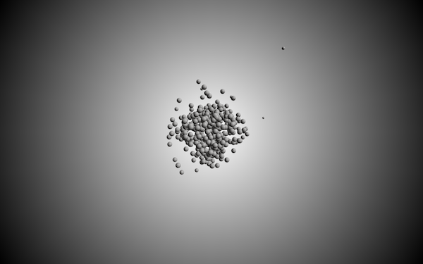

Shukatsu = Fishing
本作では私が実際に就職活動の経験を通して思案したことを映像として表現した。
本作は、就職活動を釣りに見立てている。ある企業の面接で就活は「確率論だ」という話になった。企業は優秀な学生を採用するために有名な私大や国立大に学生を探しに行く。企業の募集要項を見てたくさんの学生がそれに応募をする。応募している学生の心情は様々で、絶対に受かりという気持ちをもっている者もいれば、試しに出して見た者やなんとなく応募した者もいるだろう。
その様子を釣りに置き換えてみた。漁船は魚が多く釣れそうなポイントへと行き、そこに餌や網をかける。魚が掛かるのを待ち、掛かったと思ったら引き上げる。一方、水中の魚は餌に飛びついて取り合いをしている魚もいれば、それを注意深く観察してから飛びつく魚もいる。もっと視野を広げれば、ずっと水中を漂ってる魚もいるだろう、足を生やし自ら陸に上がろうとする魚もいるだろう。自分に1番合っているであろう方法で各々は社会との繋がり方を模索する。
その様子を就職活動をしている自分から感じ取った。
openFrameworks

